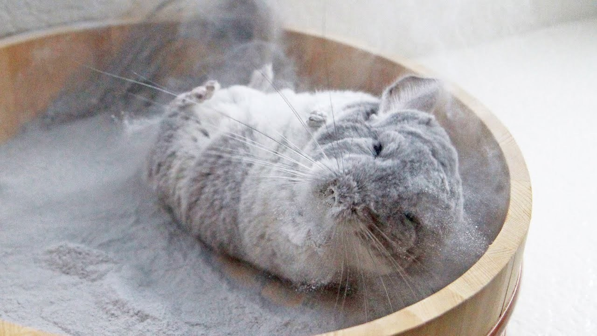
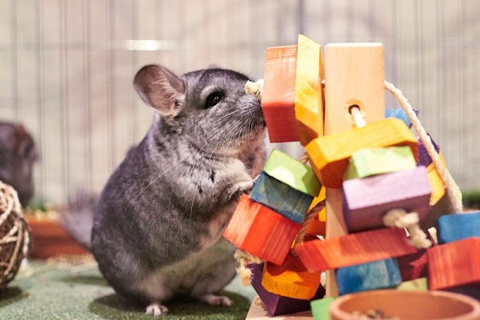

Chinchillas typically eat 1-2 tablespoons a day of food. On a daily basis check their food bowls for fecal pellets and/or urine. Throw away any food that has been contaminated. Always have wholesome food and fresh water available to your animals 24 hours a day. Fresh hay is an important part of a chinchilla's diet. Timothy and alfalfa are popular choices for feeding to chinchillas. Hay should not be placed on the bottom of a cage, but either on an upper shelf or in a hay rack mounted on the side of the cage. We recommend using bottled, filtered, or boiled water to help protect your chinchilla from getting the Giardia parasite. Water bottles should be cleaned and refilled frequently (every day or two). Chinchillas love treats, with raisins being one of their favorites. Treats should be given in very limited quantity in spite of all the begging that your chinchilla will do. We suggest no more than 1-2 treats a day.
Chinchillas need to have a dust bath at least once a week to keep the natural oils in their fur from matting it down. Put about 1-2 cups of dust into their dust bath, and they will do the rest.
A chinchilla needs to be groomed at least once a month with a fine-toothed grooming comb. This helps prevent the chinchilla from ingesting its fur and potentially developing a hairball in its digestive tract.
Male chinchillas need to be checked for hair rings every week or two. Hair rings are caused by loose hair that wrap around the penis forming a ring of hair. This happens underneath the foreskin. You have to retract the foreskin and pull out the penis [which is around 1+ inch long]. Look for a darker area around the pink of the shaft. Hair rings can cause serious injury and even death, which can be prevented by routine examination and removal.
Like all animals, chinchillas need exercise everyday. We recommend that chinchillas get free-time outside of their cage everyday. If this is not possible, you may consider adding an exercise wheel to your chinchilla's cage. We recommend a solid surface wheel approximately 12-15 inches in diameter.
Chin-proofing a room is necessary before letting a chinchilla run around. Chinchillas can squeeze into very small spaces so check the room for ways that a chinchilla might get trapped, injured, or be able to escape.Chinchillas are chewers, which means that electrical cords, baseboards, furniture, etc., are all potential risks to the chinchillas as well as your belongings. They seem to particularly enjoy chewing on antique furniture! Bathrooms are the easiest room to make chinchilla proof.Key points to remember: